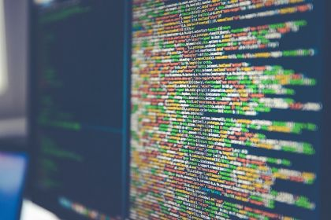

Wat zou ik doen na mijn opleiding?
Ik was zowieso al van plan voordat ik deze opleiding deed om ergens te werken in de ICT sector. Ik ben er persoonlijk nog niet goed uit welke richting ik uit wil in de ICT sector omdat ik met veel onderdelen nog niet kennis heb gemaakt.
Waarom ICT?
Omdat ik op de basisschool altijd geinteresseerd was in informatica waar ik al wat leerde over de basis van html. Ik vind het heerlijk om te verdiepen in ICT waarbij er uren voorbijgaan zonder dat ik me verveel.Daarnaast doe ik met een paar vrienden van me een project waarbij je in groeps verband moet werken aan een racing kart. Dit project is compleet vanaf nul gestart.

test 3